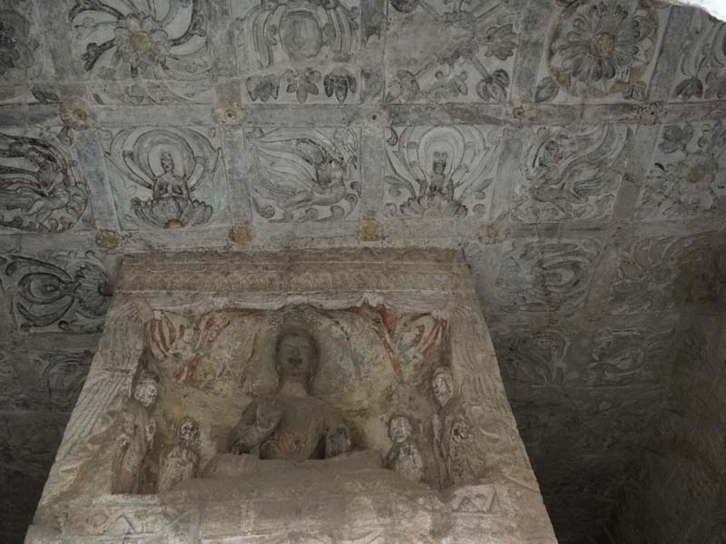
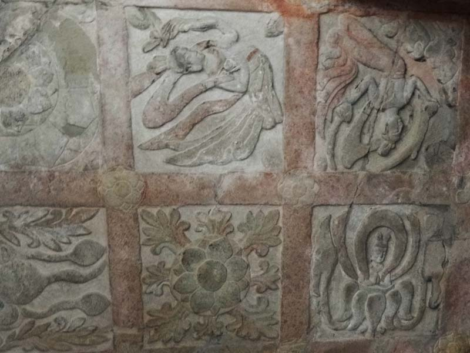

第五窟因它规模比较小，故没有中心柱的雕刻。它最精彩的是窟顶莲花藻井的雕刻：中间一朵盛开的大莲花，周围环绕着六身飞天，手持供品，衣裙翻转，构图别致，雕刻精美，北京人民大会堂的葵花顶就是根据这个莲花顶设计的。第五窟突兀在壁面之外，中央有约三公尺之方柱，其四面各刻有大佛龛，窟内东西北三壁上，各开四佛龛，安置三尊佛，上部并造千体佛。四壁之腰壁如同第二、第三窟，其前面及左右均刻有天人奏 乐之图。石窟门外上方和两侧有许多从北魏到唐代的小型佛龛。在窟门左侧雕有一座佛塔，九级，下三级为楼阁式建筑形式，每一级都有佛像，为世所罕见，对研究北朝的建筑史有重要价值。窟内设有中心方柱；窟顶为方形藻井；藻井中心是一个特大的莲花，周围环绕六个凌空高翔的飞天，四角有图案化的化生佛并间有忍冬。整个藻井是以莲花为主题，构图匀称，美观大方。
千佛龛石壁较低，内有一个较大的佛龛，为唐代乾封年间所造。龛高1.5米，宽2.12米，龛额为拱形。后殿平直、规整，有一坐佛。殿壁刻有排列整齐的小佛龛，有小佛九百九十九尊，加上中间的大佛，恰巧是一千尊，故曰“千佛龛”。龛外两侧有许多摩崖造像，刀法多变，形象生动。